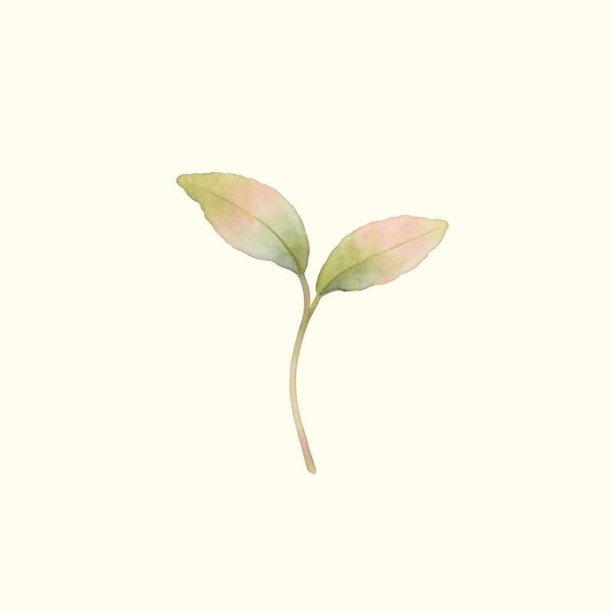

Rooted Zen
You do not chase the light.
You become it, one quiet hour at a time.
A calm focus timer that rewards stillness with light.

🛡️ 100% local
📵 No tracking
🚫 No ads

You do not chase the light.
You become it, one quiet hour at a time.
A calm focus timer that rewards stillness with light.
I couldn't find a focus timer that was actually beautiful. So I built the one I wanted to use — for myself first, and now for anyone who feels the same way.
The landscapes inside the app were inspired by a more personal place: traveling with my child, and seeing how wide and different the world looks through young eyes. I wanted to keep those views — and share them.
So the idea is simple: finish a session, earn Glow, and a new landscape quietly arrives on your horizon. But the Glow is only the surface. What you are really earning, session by session, is the oldest skill there is — the ability to sit still and go deep.
"Know where to rest, and you find resolve.
With resolve comes stillness.
In stillness, peace.
In peace, clarity.
In clarity, reward."

Ich fand keinen Fokus-Timer, der wirklich schön war. Also habe ich den gebaut, den ich selbst nutzen wollte.
Die Landschaften in der App sind von einem sehr persönlichen Ort inspiriert: Reisen mit meinem Kind — und wie weit und fremd die Welt durch junge Augen aussieht. Ich wollte diese Ansichten bewahren und weitergeben.
Die Idee ist einfach: Du jagst dem Licht nicht hinterher. Du wirst es — eine stille Stunde nach der anderen.